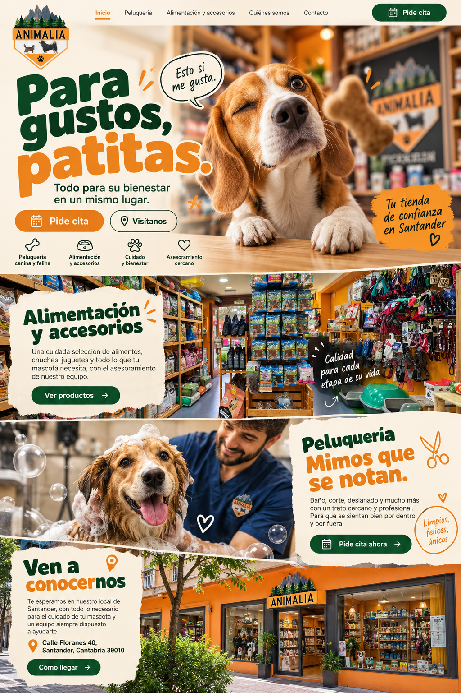

Kit completo · Modelo 03 · Para gustos, patitas.
Prévia escolhida abaixo. O estudo usa fotos originais na loja, equipe e fachada. O vídeo e as maquetes são composições ilustrativas, sem captura de navegador.
